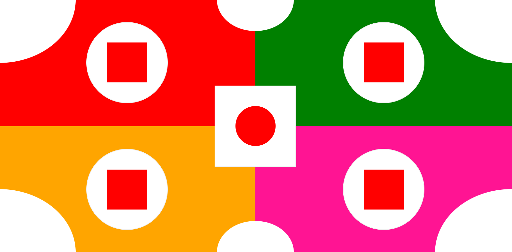
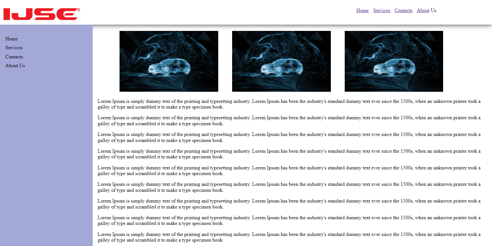
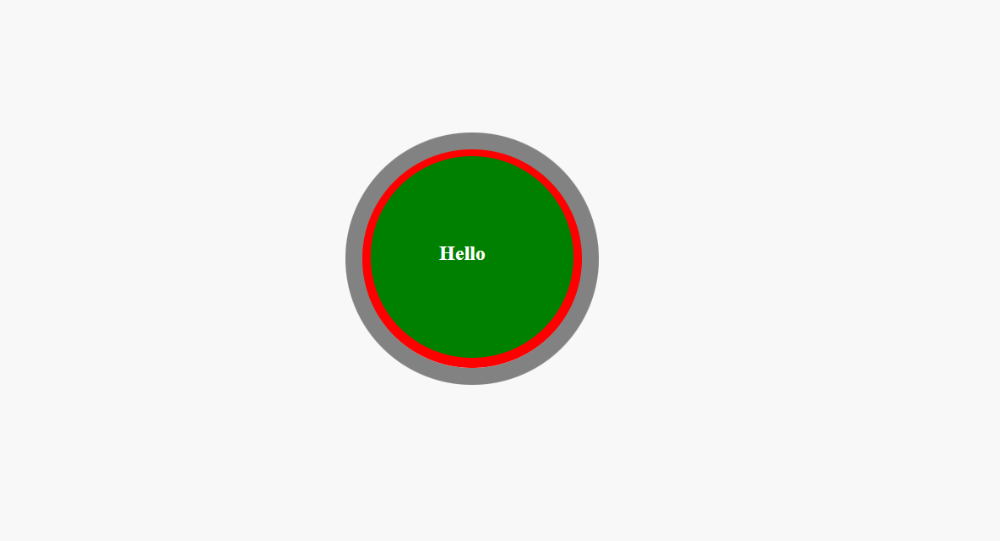
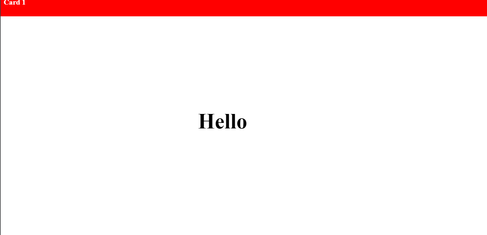
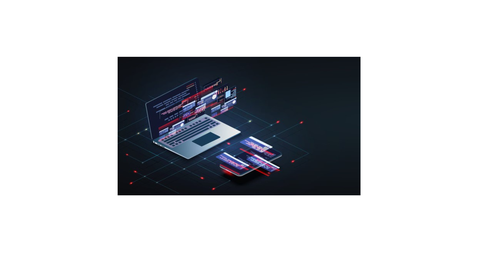
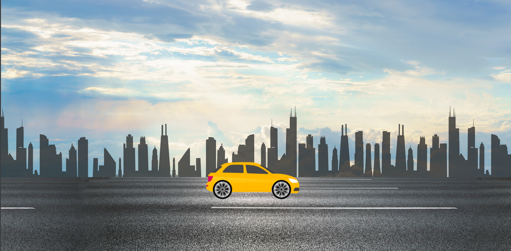
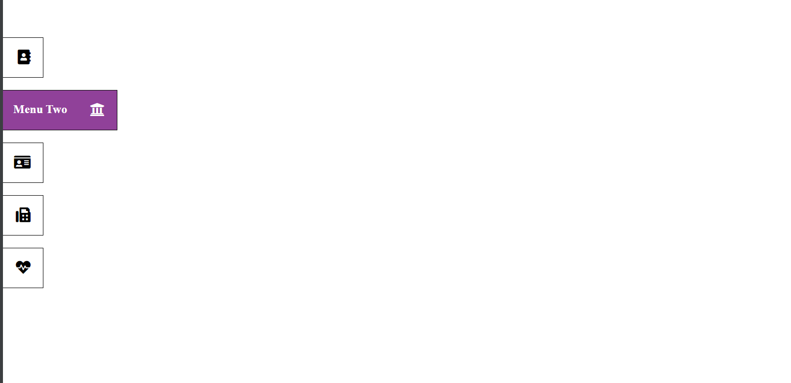
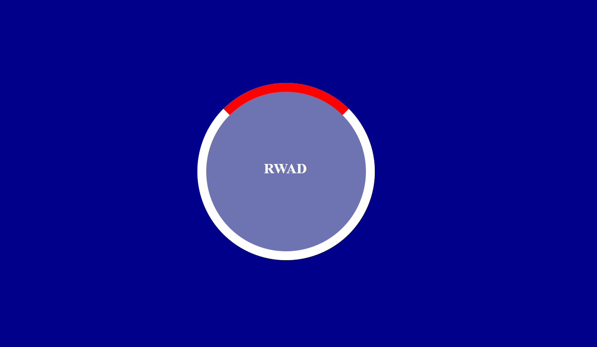
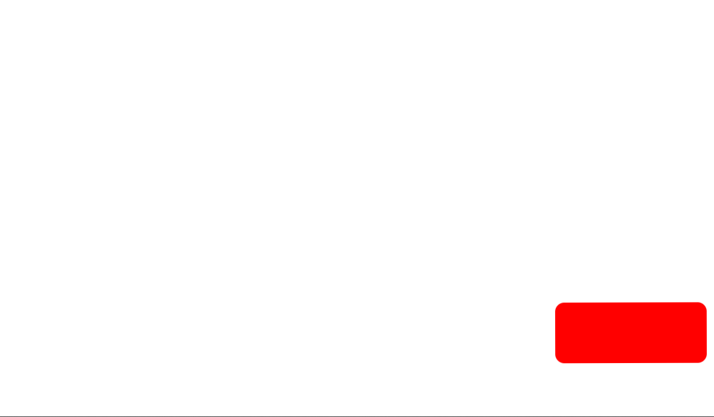

Assignment 01
- Learning Basics of CSS
- More about positions, sizes, margins etc
You can find the source code on
go to Assignment 01
Assignment 02
- Learning Basics of CSS
- More about positions, sizes, margins etc
You can find the source code on
go to Assignment 02
Assignment 03
- Using Borders, radius, positions
- Responsive Design
You can find the source code on
go to Assignment 03
Assignment 04
- Knowledge of sticky positions
- margins, paddings, borders etc
You can find the source code on
go to Assignment 04
Assignment 09
- Using Comestic styles
- Animations are well used
You can find the source code on
go to Assignment 09
Assignment 10
- Using Comestic styles
- Knowledge of absolute, sticky positions
You can find the source code on
go to Assignment 10
Assignment 05
- Same as assignment 02 but this is responsive
- More about positions, sizes, margins etc
You can find the source code on
go to Assignment 05
Assignment 06
- Knowledge of sticky positions
- margins, paddings, borders etc
You can find the source code on
go to Assignment 06
Assignment 07
- Knowledge of sticky positions
- margins, paddings, borders etc
You can find the source code on
go to Assignment 07
Assignment 08
- Knowledge of sticky,absolute positions
- Animations and its attributes well used
You can find the source code on
go to Assignment 08